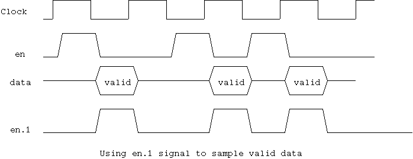

//
drive signals to inactive state
clav.0
= 1'b0 ; // active high
soc.0
= 1'b0 ;
data.0
= 0 ;
//
using two semaphore to allow back to back drive
clav_sem
= new ; // mutex for driving clav
drive_sem
= new ; // mutex for sending a cell
}
The function drive_cell() accepts a cell instance and drive it to
the UTOPIA port. It uses two semaphore to arbitrate on driving clav signal
and data port. At the last byte of the cell, the current cell driver will
drive clav to 0 weakly, and release the clav_sem. If another driver is
ready to drive the next cell, this clav will be overwritten to 1, and cell
will be continuously sent. The data transfer will be stalled when 'en'
signal in the previous cycle is not asseted. Because the possible stall,
the next driver can't start driving after getting clav_sem after 52th byte
of the previous cell. Thus, we use the second semaphore drve_sem to control
the byte drive port timing.
if( i == 52 ) {
clav.0 = 1'b0 weak ;
clav_sem.put() ;
}
assert(
@1,MAX_ENABLE_DELAY (en.1 == 1'b0) // using pipe one signal
) ; // note that using
}
drive_sem.put()
;
printf(
"a cell driven on %d at %d\n", id, get_cycle() ) ;
}

The variables receive_count and receive_num is used to implement
a mechanism to flow control the receiving port. The tester will increment
the receive_num as it expects a cell, then the count will be transferred
to receive_count which will tell receiver to drive 'clav' signal, after
some delay that is generated by the random variable generator. There are
two functions to provide different type of delay mechanism: receive_enable_loop()
and receive_enable_loop_rnd().
The function receive_enable_loop() is used to control the delay between
a sent cell to a received cell, with minimum delay plus some range of random
delay. The variable 'receive_num' will be incremented by the test sequence
when a cell is sent to a port and the corresponding cell is expected to
show up on the port. It may be multiple cells come out on various port
depend on the config register. In this case, the test sequence must increment
the 'receive_num' on multiple receiver instances accordingly. This mechanism
will not produce a flow control at all when a cell is continuously sent.
The function receive_enable_loop_rnd() is used to control the delay
between one received cell to next received cell. Thus, this mechanism can
control that the flow control always happens. The receive count will only
be incremented when it is zero and receive_num is not zero, which means
the receiver completed receiving a cell, and another cell is expected.
A delay generated by the random distribution class instance (will be explained
in 12. Random Distribution Classes) give some delay between cell to cell.
(You can set a constant zero not to have delay at all). This mechanism
will provide a specific receiving rate on the ATM transfer side.
The function receive_loop() fork a thread to receive the cell from
the port and transfer the cell object to the receive queue.
It checks if 'receive_count' value is not zero, which means it suppose
to accept a cell. Then it drives 'clav' signal and starts receiving a cell.
At the end of the cell byte receiving loop, it checks if 'receive_count'
is still not zero to continuously receive the next cell. If the value is
zero, it negates the clav signal and wait until receive_count becomes non-zero.
This mechanism provides the flow control mechanism on the UTOPIA port.
When the receiver starts receiving cell byte, it expects that 'en'
signal will be asserted within MAX_ENABLE_DELAY (set to 1000 cycle).
fork
forever
{
if( receive_count == 0 ) {
while( receive_count == 0 ) @(posedge tx_clk) ;
clav.0 = 1'b1 ;
@(posedge tx_clk) ;
}
clav.0 = 1'b1 ;
receive_count-- ;
cell = new ;
for( i = 0 ; i < 53 ; i++ ) {
if( i == 52 && receive_count == 0) {
clav.0 = 1'b0 ;
}
assert(
@1,MAX_ENABLE_DELAY (en.0 == 1'b0)
) ; // note that using
assert( soc.0 == i?1'b0:1'b1 ) ;
cell.data[i] = data.0 ;
}
printf( "a cell received on %d at %d\n", id, get_cycle() ) ;
rcv_que.que.send( cell ) ;
}
knife
}